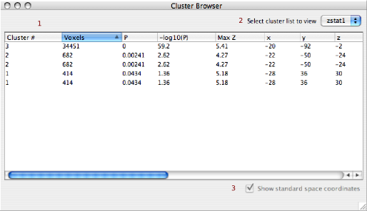

|
The cluster browser presents information from the FEAT cluster results as a navigable table(1). Select from the available statistical cluster lists using the pull down menu(2). If the image data supports it then you can view cluster locations in standard space mm coordinates. This can be toggled on/off with the checkbox in the bottom right corner.(3). Clicking on a particular row of te cluster browser will move the cursor to the associated location. |
 |